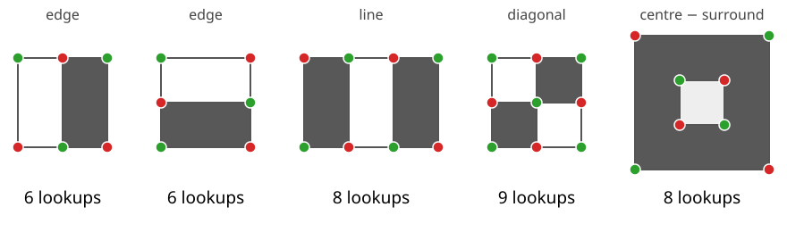

What simple numbers describe “what is around this pixel” or “what is in this window”, and are cheap enough to compute millions of times?
Haar-like features: the sum over one rectangle minus the sum over its neighbour. Edges, lines, diagonals, blobs.
Each costs 6 to 9 table lookups, whatever its size.
The pool of all such features in a small window is huge, far larger than the number of pixels.
Their relation to the Haar wavelets, and why detection does not need a basis.
The box group of a pixel feature stack: every scale at the same cost.
Slides titled The math give the formulas and proofs; the ideas are complete without them.
A feature from two rectangles
Place two equal rectangles side by side and take sum(white) − sum(black).
On a flat region: 0. On a vertical edge (dark left, bright right): large and negative; mirrored: positive.
It is a box-smoothed derivative: like the Sobel kernel of the filtering unit, but of any size.
With the integral image the two sums cost 4 lookups each, but they share two corners: 6 lookups in all.
A cartoon face: the band of the eyes is darker than the band of the cheeks below. A two-rectangle feature over both bands gives a strongly negative number on almost every face, whatever the person looks like.
The templates

Edge (two rectangles, across or down): 6 lookups. Line (three rectangles; the centre counts twice so that a flat region gives 0): 8. Diagonal (four rectangles): 9. Centre − surround (a box minus the mean of a larger box): 8.
Any position, any width and height: the cost stays the same.
Try it: features on an image
Normalising for lighting
The raw response grows with the contrast of the image: a face in dim light gives a smaller number than the same face in bright light.
Divide by the standard deviation of the window (from the two tables of unit 2): the response no longer depends on contrast.
Subtracting the mean is not needed: every template has weights that sum to zero, so adding a constant to the image changes nothing.
Dividing by the area of one rectangle makes features of different sizes comparable (a difference of mean grey levels).
The pool is huge
A detector looks at a 24 \times 24 window. How many features can we place in it?
One template type, e.g. the edge across with rectangles of width w and height h: it covers 2w \times h pixels and fits at (24 - 2w + 1)(24 - h + 1) positions. Summed over all w, h: 43 200.
All five classic types: 162 336 features. Our six types: 170 800.
A 24 \times 24 window has 576 pixels: the pool is about 280 times larger. It is overcomplete: far more features than needed to describe the window.
Each costs 6–9 lookups. Which few are worth computing? The next unit lets boosting choose.
The math: features as inner products
A rectangle feature is an inner product with a piecewise-constant mask: f = \langle w, I\rangle = \sum_{x,y} w(x,y)\, I(x,y), \qquad w \in \{-1, 0, 1\} \text{ (or } 2, -\tfrac19\text{)}, \quad \textstyle\sum w = 0. Zero sum: \langle w, I + c\rangle = \langle w, I\rangle, so constant offsets do not matter; normalising by the window SD removes the contrast.
Lookups = the number of distinct corners with a non-zero coefficient: each rectangle adds +1, -1, -1, +1 (times its weight) at its corners; shared corners add up.
Pool size for a template of a \times b cells in a W \times H window: \sum_{w=1}^{\lfloor W/a\rfloor}\ \sum_{h=1}^{\lfloor H/b\rfloor} (W - aw + 1)(H - bh + 1). For the edge across (a = 2, b = 1) in 24 \times 24: (23 + 21 + \dots + 1)(24 + 23 + \dots + 1) = 144 \cdot 300 = 43\,200.
The math: an edge feature on a ramp
Let I(x, y) = ax + b (a ramp of slope a). An edge feature with two w \times h rectangles, left minus right:
Each pixel on the right is aw brighter than its partner on the left, and there are wh pairs: f = \text{sum(left)} - \text{sum(right)} = -a\,w^2 h. Divided by the rectangle area wh: -aw, the slope times the distance between the two rectangle centres. The edge feature measures the gradient, smoothed over a box: a box version of the Gaussian derivative of the edges day.
Rectangle features and Haar wavelets
The 2D Haar wavelets (wavelets elective) are also differences of rectangle sums: one level of the Haar transform gives the edge features across and down (H and V) and the diagonal one (D), plus the mean (LL).
Haar wavelet transform
Haar-like features
sizes, positions
powers of two, on a fixed grid
every size, every position
number
as many as pixels
hundreds of times more
structure
orthonormal basis: invertible
overcomplete: no inverse
purpose
represent and reconstruct (compression)
discriminate (detection)
A detector does not need to rebuild the image, only to tell faces from background: it can afford a redundant, overcomplete set and pick the useful features.
Feature stacks for pixel classification
Recalled from the random forests day: a pixel classifier gets a feature vector for every pixel, a stack of filtered images at several scales (Gaussian smoothing, derivatives, …).
This day adds the box group, each from the tables of I and I^2:
box mean and box standard deviation (texture), scales 1, 2, 4, 8, 16 px;
centre − surround: mean of a box minus the mean of a box twice as large; a blob detector, the box version of the difference of Gaussians (edges day);
edge features across and down: box-smoothed derivatives.
With the integral image every scale costs the same: large context is free. Gaussian stacks are the usual choice; box stacks are their fast approximation (repeated boxes ≈ Gaussian, unit 2).
Try it: a box feature stack
Summary
A rectangle feature is a difference of rectangle sums: edges (6 lookups), lines (8), diagonals (9), centre − surround (8), at any size and position.
Divide by the window’s standard deviation to remove contrast; the weights sum to zero, so offsets do not matter.
The pool in a 24 \times 24 window has about 160 000 features: overcomplete; something must choose.
Haar wavelets are a dyadic, orthonormal subset; Haar-like features drop the basis property because detection needs discrimination, not reconstruction.
The box group of a feature stack gets every scale at the same cost. (Per-object intensity and texture features: the measurements day.)